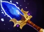

Minor patch with 2 new heroes and 2 items, aswell as QoL for several heroes.
NEW HEROES
DAMIANLUCK925: NEW HERO
Damianluck925 (Also known as the original Fulcrum) was heading to yodieland, but he got so damn faded hitting his blinkers, that he lost his way and ended up in the Poelsemix arena instead.
PENJAMIN: TOGGLE ABILITY
Damian dabs on his penjamin, granting him healing over time, aswell as getting more faded.
FADEDTHANAHO: PASSIVE ABILITY
Every time Damian attacks, he has a chance to become more fadedthanaho, temporarily lowering his base attack rate and increasing his damage.
FADED: PASSIVE ABILITY
Damians abilities make him more faded, empowering him the more faded he is. Be careful! Get faded enough and he will have an accident in the poelsemix arena. This accident silences him, resets how faded he is and prevents him from getting any fadedthanaho stacks.

SCEPTER EFFECT
Gain 1 max stack of faded passively every 8 seconds
DABBINGTON CITY: ULTIMATE ABILITY
Damian invites the target to dabbington city, starting an arena duel. Neither can leave the arena, but take reduced damage from other sources. The winner gets bonus gold and if it is Damian himself, his faded cap increases
RAIO (雷王): NEW HERO
Raiō - The True Thunder God King, has entered the Poelsemix arena in the pursuit of a hobby where he can satisfy his fighting needs. Of course he had to nerf himself to make it possible (or so he says atleast).
AMP IT UP (アンプ大増加): ACTIVE ABILITY
Raiō implodes all voltage on the target. Dealing damage per stack. Scales with intellect.
UNSTABLE (不安定): PASSIVE ABILITY
Unstable energy passively bounces to an random enemy in range. Deals damage scaling with intellect and applies a stack of voltage. Prioritises heroes. Raiō's basic attacks apply a stack of voltage. Voltage disappears after 3s. Refreshing whenever applied.
AFTERIMAGE (残像): ACTIVE ABILITY
Raiō makes a swift dash, leaving behind an after image. The afterimage deals reduced damage and takes extra damage. The afterimage is also unstable. Damage from unstable is not reduced.
HEAVENS DECREE (天命) : ULTIMATE ABILITY
Raiō marks the target location. A great thunder bolt will strike it after 1.25s delay, dealing great damage to those hit. Applies several stacks of voltage on hit. This ability has global range.
SCEPTER EFFECT
Turns Heavens decree into a passive, that auto targets a random visible hero with reduced cooldown.
NEW ITEMS
BLINK BOOTS: NEW ITEM
ACTIVE: Blink to target point within 1250 units, taking hero damage puts this on a cooldown
PROVIDES:
+60 movement speed
PRICE: 3000
RECIPE: Boots of speed + Blink dagger + Recipe (250)
SOLVOGNEN: NEW ITEM
PASSIVE: Nearby enemies take 70 damage per second and have a 15% chance to miss. Nearby allies are healed 10 health per second
PROVIDES:
+60 damage
+5 hp regen
+20% evasion
PRICE: 7400
RECIPE: Radiance + Ring of Tarrasque + Headdress + Recipe (250)
BALANCE CHANGES
Hero major changes
INTRUDER: MODEL CHANGE
Intruder has received a new model, some slight changes have been made to fit this model, but its barely anything
KAJ: MODEL CHANGE
Kaj has received a new model, some slight changes have been made to fit this model, but its barely anything
BRIAN:
HURTIGBRILLE:
SCEPTER REWORK
Now scorches the ground as he walks, dealing damage to those in the flames, instead of acting as a weak radiance.
Hero minor changes
Several heroes with dashes or blinks will now cast it at max range if clicked outside of range and cast range will affect them:
Kim Larsen stille, Shimakaze wave, Nissan drift, Musashi path of wind, Mewtwo teleport, Herobrine creepypasta
Kazuya: base attackspeed 100 -> 105
Teemo: 0.6 -> 1
Harald: Aura convert talent now affects heroes, Wrath of thor damage 110 240 370 500 -> 200 300 400 500